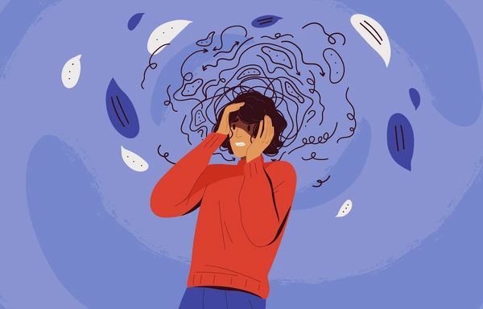

Masuk ke dunia perkuliahan adalah salah satu fase transisi terbesar dalam perkembangan dewasa muda.
Pada tahap ini, mahasiswa dituntut untuk mandiri, menyesuaikan diri dengan lingkungan baru, sistem belajar
baru, serta tuntutan akademik yang meningkat. Semua perubahan ini dapat memicu stres, terutama pada
mahasiswa semester pertama yang sedang dalam tahap adaptasi.

1. Apa Itu Stres?
Stres adalah respon alami tubuh ketika menghadapi tekanan atau tuntutan tertentu. Stres tidak selalu buruk —
pada tingkat tertentu, stres membantu kita tetap fokus dan termotivasi. Namun, stres yang berlebihan
atau tidak terkontrol dapat mengganggu kesehatan fisik, emosi, dan prestasi akademik.
2. Gejala Stres pada Mahasiswa
Stres dapat muncul dalam berbagai bentuk. Berikut 4 kategori utama gejalanya:
- Fisik: sakit kepala, tegang otot, jantung berdebar, mudah lelah.
- Emosional: cemas, mudah marah, merasa kewalahan, sering khawatir.
- Kognitif: sulit fokus, lupa, overthinking, sulit mengambil keputusan.
- Perilaku: menunda tugas, menarik diri, makan berlebih atau kurang, begadang.
3. Penyebab Umum Stres pada Mahasiswa Semester 1
- Adaptasi lingkungan baru — mahasiswa harus menyesuaikan diri dengan suasana kampus, teman baru, dan kultur akademik.
- Tuntutan akademik meningkat — lebih banyak tugas, presentasi, dan materi yang kompleks.
- Manajemen waktu kurang baik — kebebasan yang besar membuat sebagian mahasiswa sulit mengatur waktu.
- Ekspektasi diri dan orang lain — tekanan untuk selalu berprestasi dapat menjadi beban mental.
- Kurang dukungan sosial — terutama bagi mahasiswa rantau atau yang sulit bersosialisasi.
- Masalah finansial — kebutuhan hidup dan biaya pendidikan dapat memicu stres tambahan.
4. Dampak Stres Terhadap Akademik & Kesehatan
Jika tidak dikelola, stres dapat berdampak negatif seperti:
- Menurunnya prestasi akademik
- Gangguan tidur dan kelelahan
- Burnout atau kejenuhan belajar
- Meningkatnya kecemasan atau depresi
- Penurunan motivasi dan minat belajar
5. Strategi Mengatasi Stres
Berikut beberapa strategi yang terbukti efektif menurut psikologi pendidikan:
- Manajemen waktu: gunakan metode seperti time blocking, jadwal harian, atau pomodoro.
- Mengenali pikiran negatif: gunakan teknik CBT sederhana untuk mengganti pikiran irasional.
- Menjaga kesehatan fisik: tidur cukup 7-8 jam, konsumsi makanan bergizi, dan olahraga ringan.
- Mengembangkan support system: bergabung dengan organisasi, mencari teman belajar, atau komunitas kampus.
- Relaksasi: meditasi, pernapasan 4-7-8, grounding 5-4-3-2-1.
6. Kapan Perlu Mencari Bantuan Profesional?
Konsultasi dengan psikolog bila mengalami:
- Stres berlangsung lebih dari 2 minggu
- Mengganggu tidur atau makan
- Menurunnya prestasi drastis
- Merasa kewalahan terus-menerus
- Muncul pikiran menyakiti diri
7. Grafik Hasil Analisis Kecemasan (20 Responden)
Grafik berikut menunjukkan kategori kecemasan responden (Normal vs Sedang/Tinggi).